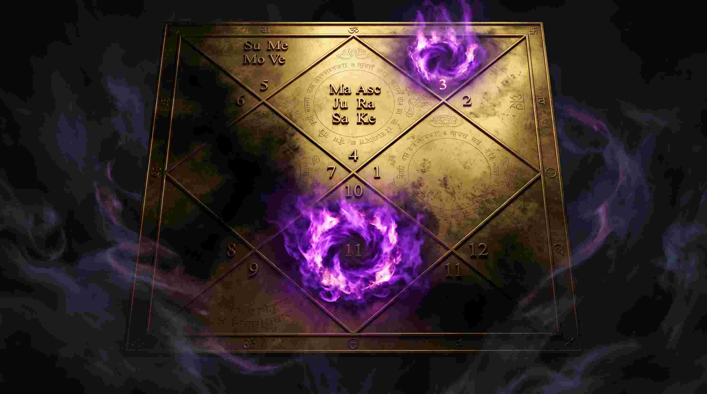
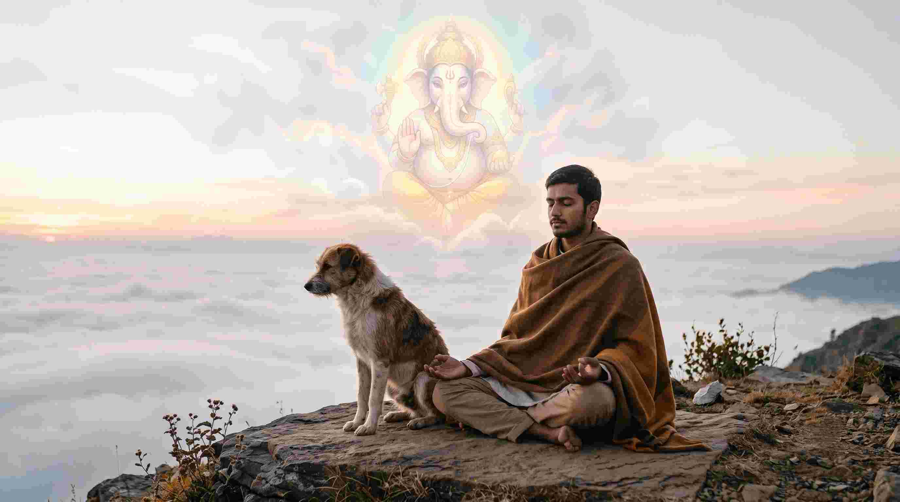

क्या आपके जीवन में कभी ऐसा हुआ है कि अचानक कोई भयंकर बीमारी आ गई हो, लेकिन जब आप डॉक्टर के पास एमआरआई (MRI) या सीटी स्कैन (CT Scan) कराने गए, तो सारी रिपोर्ट्स बिल्कुल नॉर्मल आईं? या क्या ऐसा हुआ है कि आपका व्यापार बहुत अच्छा चल रहा था और अचानक, बिना किसी तार्किक कारण के, सब कुछ रातों-रात खत्म हो गया?
यदि हाँ, तो स्वागत है उस दुनिया में जहाँ विज्ञान की सीमाएं खत्म होती हैं और केतु (Ketu) का साम्राज्य शुरू होता है। एक मेडिकल छात्र और वैदिक ज्योतिषी होने के नाते, मैंने अक्सर देखा है कि आधुनिक चिकित्सा विज्ञान (Medical Science) जिन बीमारियों को 'इडियोपैथिक' (Idiopathic - अज्ञात कारण वाली बीमारी) कह कर छोड़ देता है, उनकी जड़ें वास्तव में जन्म कुंडली में बैठे केतु दोष (Ketu Dosha) में होती हैं।
"राहु वह है जो आप इस जन्म में पाना चाहते हैं। लेकिन केतु वह 'वायरस' है जो आपके पिछले जन्मों के अधूरे कर्मों का डेटाबेस लेकर बैठा है। यह तब ट्रिगर होता है जब आप गलत रास्ते पर जा रहे होते हैं।"
1. केतु क्या है? छाया ग्रह का असली विज्ञान
खगोलीय (Astronomical) दृष्टि से, केतु कोई भौतिक ग्रह (Physical Planet) नहीं है। यह चंद्रमा की कक्षा (Moon's orbit) और पृथ्वी के सूर्य के चारों ओर घूमने वाले पथ (Ecliptic) का दक्षिणी प्रतिच्छेदन बिंदु (South Node) है। जहां राहु उत्तरी ध्रुव (North Node) है, वहीं केतु दक्षिणी ध्रुव है।
चूंकि केतु का कोई भौतिक शरीर नहीं है, इसलिए इसका प्रभाव सीधे हमारे अवचेतन मन (Subconscious mind) और हमारे सूक्ष्म शरीर (Astral body) पर पड़ता है। केतु को मोक्ष, वैराग्य (Detachment), रहस्य, छुपे हुए खजाने, अध्यात्म और अचानक होने वाली घटनाओं का कारक माना जाता है।
2. मेडिकल एस्ट्रोलॉजी और केतु: वे बीमारियां जो मशीनें नहीं पकड़ पातीं
मेडिकल एस्ट्रोलॉजी (Medical Astrology) में केतु सबसे खतरनाक और रहस्यमयी ग्रह माना जाता है। जब केतु कुंडली में खराब स्थिति में होता है या किसी खराब गोचर (Transit) से गुजरता है, तो यह व्यक्ति की पैथोलॉजी (Pathology) को इस तरह बिगाड़ता है कि डॉक्टर भी हैरान रह जाते हैं।
केतु दोष के कारण होने वाली शारीरिक और मानसिक समस्याएं:
- ऑटोइम्यून डिसीज (Autoimmune Diseases): केतु भ्रम का कारक है। जब यह शरीर पर हावी होता है, तो शरीर का प्रतिरक्षा तंत्र (Immune System) भ्रमित हो जाता है और अपने ही स्वस्थ ऊतकों (Healthy tissues) को नष्ट करने लगता है।
- अज्ञात संक्रमण (Mysterious Infections): वायरस, परजीवी (Parasites) और ऐसे फंगल इन्फेक्शन जिनका स्रोत पता न चले, केतु के अधीन आते हैं।
- सर्जरी और अचानक चोट: केतु मंगल के समान कार्य करता है (कुजवत केतु)। लेकिन मंगल की चोट सामने से दिखती है, जबकि केतु की चोट अचानक होती है या इसमें सर्जरी की नौबत आ जाती है।
- मानसिक अलगाव (Psychological Detachment): व्यक्ति भीड़ में रहकर भी खुद को अकेला महसूस करता है। उसे ऐसा लगता है कि कोई उसे समझ नहीं पा रहा है। यह केतु के कारण होने वाला क्लिनिकल डिप्रेशन (Clinical Depression) है।
3. कुंडली में केतु दोष: 12 भावों का रहस्य
केतु दोष का प्रभाव हर व्यक्ति की कुंडली में अलग-अलग होता है। आइए समझते हैं कि जब केतु कुंडली के विशिष्ट (और सबसे संवेदनशील) भावों में बैठता है, तो वह क्या तबाही मचाता है:

- प्रथम भाव (लग्न) में केतु: व्यक्ति हमेशा अपनी पहचान (Identity) को लेकर कन्फ्यूज रहता है। वह अत्यधिक अंतर्मुखी (Introvert) हो जाता है और अक्सर उसे सिरदर्द या नसों की समस्या रहती है।
- चतुर्थ भाव (माता और सुख) में केतु: व्यक्ति अपने जन्मस्थान पर कभी सुखी नहीं रह सकता। उसे अपनी माता से या तो दूर रहना पड़ता है या माता को गंभीर स्वास्थ्य समस्याएं होती हैं। घर में हमेशा एक अजीब सी बेचैनी रहती है।
- सप्तम भाव (विवाह) में केतु: यह सबसे जटिल स्थिति है। केतु वैराग्य का कारक है और सप्तम भाव मिलन का। ऐसे व्यक्ति का विवाह अक्सर बहुत देरी से होता है या जीवनसाथी के साथ एक अजीब सी मानसिक दूरी बनी रहती है।
- अष्टम भाव (आयु और रहस्य) में केतु: यहाँ केतु अत्यंत शक्तिशाली होता है। यह व्यक्ति को अचानक दुर्घटनाएं दे सकता है, लेकिन साथ ही यह उसे अत्यंत गहरा ज्योतिषी, तांत्रिक या सर्जन (Surgeon) भी बना सकता है।
- द्वादश भाव (मोक्ष और विदेश) में केतु: महर्षि पाराशर के अनुसार, 12वें भाव का केतु व्यक्ति को जन्म-मरण के चक्र से मुक्त कर सकता है। लेकिन भौतिक दृष्टि से, यह नींद की कमी (Insomnia) और अचानक बड़े आर्थिक नुकसान देता है।
4. केतु दोष से जुड़े मिथक और वास्तविकता (Myths vs Reality)
ज्यादातर लोग केतु के नाम से डरते हैं, लेकिन यह डर आधा-अधूरा है।
मिथक: केतु हमेशा बुरा फल देता है और जीवन को बर्बाद कर देता है।
वास्तविकता: केतु आपको केवल उन चीजों से दूर करता है (Detaches you) जो आपके आध्यात्मिक विकास (Spiritual Growth) के लिए सही नहीं हैं। यदि आप किसी गलत रिश्ते या गलत करियर में चिपके हुए हैं, तो केतु उसे बलपूर्वक छीन लेगा। केतु की मार वास्तव में यूनिवर्स का 'कोर्स करेक्शन' (Course Correction) है।
5. केतु दोष के अचूक वैज्ञानिक और वैदिक उपाय (Remedies)
केतु एक ऐसा ग्रह है जिसे आप भौतिक रत्नों (जैसे लहसुनिया/Cat's Eye) से आसानी से नियंत्रित नहीं कर सकते। इसके उपाय बहुत सूक्ष्म (Subtle) और मनोवैज्ञानिक होने चाहिए। यदि आप केतु को शांत करना चाहते हैं, तो आपको उसके स्वभाव को अपनाना होगा।

लाल किताब और वैदिक ज्योतिष के अचूक उपाय:
- भगवान गणेश की उपासना: केतु का कोई सिर नहीं है (यह केवल धड़ है), इसलिए यह दिशाहीन है। भगवान गणेश, जिन्हें 'विघ्नहर्ता' कहा जाता है, बुद्धि (सिर) के देवता हैं। गणेश जी की पूजा करने से केतु को एक 'दिशा' और 'नियंत्रण' मिल जाता है। "ॐ गं गणपतये नमः" का जाप केतु का सबसे बड़ा इलाज है।
- कुत्तों की सेवा (Feeding Dogs): लाल किताब के अनुसार, कुत्ता केतु का वाहन और प्रतीक है। सड़क के कुत्तों (Street dogs) को नियमित रूप से भोजन कराने और उनसे प्रेम करने से केतु का क्रोध तुरंत शांत होता है। यह अचानक होने वाली दुर्घटनाओं (Sudden Accidents) को टालने का अचूक उपाय है।
- अश्विनी कुमार और मेडिकल दान: यदि केतु के कारण कोई ऐसी बीमारी हो गई है जो ठीक नहीं हो रही है, तो अस्पतालों में गरीब मरीजों को दवाइयां दान करें या किसी मेडिकल संस्था में गुप्त दान (Anonymous Donation) करें।
- अनासक्ति (Detachment) का अभ्यास करें: केतु आपसे वह चीज छीन लेता है जिससे आप सबसे ज्यादा चिपके (Obsessed) होते हैं। चाहे वह पैसा हो या इंसान। इसलिए, मन से वैरागी (Detached) बनना सीखें। "जो मेरा है, वह मेरे पास रहेगा"—इस मानसिकता के साथ नियमित ध्यान (Meditation) करें।
- मंत्र जाप: केतु बीज मंत्र: "ॐ स्रां स्रीं स्रौं सः केतवे नमः" का नियमित 108 बार जाप आपकी नसों (Nervous System) में उठने वाले मानसिक तूफानों को शांत करता है।
6. 30-दिन का केतु दोष निवारण प्रैक्टिकल प्लान
यदि आप केतु की महादशा, अंतर्दशा या गोचर से पीड़ित हैं, तो अगले 30 दिनों तक इस प्लान को सख्ती से फॉलो करें:
- पहला सप्ताह: अपने घर के नैऋत्य कोण (South-West) और सीढ़ियों (Stairs) की अच्छी तरह सफाई करें। केतु को गंदगी और अव्यवस्था पसंद नहीं है।
- दूसरा सप्ताह: हर मंगलवार और शनिवार को सड़क के कुत्तों को दूध, रोटी या बिस्किट खिलाना शुरू करें।
- तीसरा सप्ताह: दिन में कम से कम 15 मिनट के लिए डिजिटल दुनिया (मोबाइल, लैपटॉप) से कट जाएं (Digital Detox) और मौन ध्यान (Silent Meditation) करें।
- चौथा सप्ताह: भगवान गणेश के मंदिर जाएं और उन्हें दूर्वा (Durva grass) अर्पित करें। अपनी समस्याओं को मानसिक रूप से उनके चरणों में छोड़ दें।
निष्कर्ष
केतु कोई दैत्य या खलनायक नहीं है। यह ब्रह्मांड का वह सर्जन (Surgeon) है जो आपके जीवन के सड़े हुए हिस्सों को काटकर अलग कर देता है, ताकि आप आत्म-ज्ञान (Self-Realization) की ओर बढ़ सकें। हाँ, इसकी सर्जरी बिना एनेस्थीसिया (Anesthesia) के होती है, इसलिए दर्द बहुत होता है।
लेकिन याद रखें, सही उपाय, अनुशासन, और 'स्वीकार्यता' (Acceptance) के साथ, केतु का यही दर्द आपके जीवन की सबसे बड़ी आध्यात्मिक और भौतिक सफलता का कारण बन सकता है। केतु से डरें नहीं, इसे समझें!